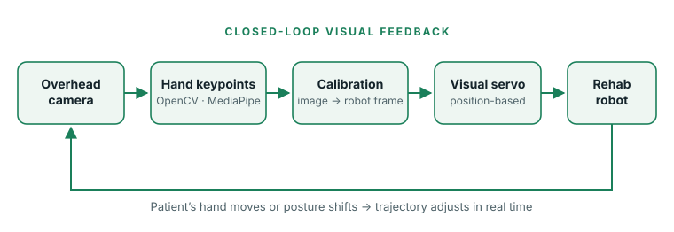

Challenge
The robot previously ran fixed trajectories, so exercises drifted out of alignment whenever a patient shifted posture or relaxed their shoulders, and a therapist had to step in.
Robotics research · Research Assistant, Robotics Laboratory · Oct 2024 – Feb 2025
Adding real-time visual feedback to a rehabilitation robot so it follows the patient’s actual hand position instead of a fixed path.

The robot previously ran fixed trajectories, so exercises drifted out of alignment whenever a patient shifted posture or relaxed their shoulders, and a therapist had to step in.
Implemented hand keypoint detection with OpenCV and MediaPipe from an overhead camera, and designed a position-based visual servoing controller in Python that maps joint coordinates from image space to the robot frame via calibration matrices.
Visual feedback was integrated into the robot’s control loop, so the trajectory adjusts automatically when the subject moves, reducing the need for manual therapist intervention.
Credits: Research carried out as a research assistant in a university robotics laboratory. Lab code, data and recordings are not publicly available, so this page describes the work in summary.